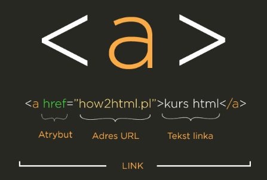

Strona internetowa to pliki o rozszerzeniu .html. Kiedy wpisujemy adres strony w przeglądarce serwer wysyła pliki tej strony do naszego komputera i wyświetla nam je w przeglądarce.
Co to jest HTML?
HTML (ang. HyperText Markup Language) to hipertekstowy język znaczników używany do budowania stron internetowych
(dokumentów). HTML nadaje strukturę (szkielet) treści strony oraz znaczenie zawartym w niej elementom.
HTML vs. CSS
Język html nazywa poszczególne elementy strony internetowej, np. paragraf.
Elementy te służą do porządkowania strony i formatowania treści.
W języku CSS określa się jego wygląd.
CSS to po prostu pliki zawierające zasady formatowania strony internetowej
np: rozmiar i kolor czcionki, kolor tła, rozmieszczenie elementów na stronie.
Znaczniki HTML
Znaczniki są to wyrażenia, które mieszczą się pomiędzy znakami < >.
Elementy html mogą posiadać atrybuty i przypisane do nich wartości.
Rozróżniamy znaczniki otwierające i zamykające np.:<a href=”#”>Link 1</a>
oraz znaczniki z grupy tzw. samozamykających np.:
<br>, <hr>, <img>, <meta>.
Uwaga
Wszystkie białe znaki (white space) czyli np. spacje, tabulatory czy entery nie są uwzględniane przez przeglądarkę
podczas renderowania kodu.
Kodując znaczniki HTML warto trzymać się tzw. struktury drzewa.
Chodzi o to, aby znaczniki zagnieżdżone poprzedzać znakiem tabulacji (wcięcie).
Z taką strukturą drzewiastą znacznie lepiej i czytelniej się pracuje.
Ponieważ znaki: "<" oraz ">" są zarezerwowane dla znaczników,
nie powinny się one pojawić w normalnej treści strony.
Jeżeli musimy ich użyć, należy wpisywać zamiast nich odpowiednio:.
< oraz >
Podstawowa struktora pliku HTML
<DOCTYPE html>
Deklaracja dokumentu czyli informacja dla przeglądarki z jakim typem dokumentu ma doczynienia.
<html> ... </html>
Deklarację języka, w którym dokument zostanie napisany.
Zapis ten oznacza, że pomiędzy znacznikiem otwarcia <html>, a zamknięcia </html> używany jest język html.
<head> </head>
Element ten opisuje ustawienia dokumentu html.
Pomiędzy znacznikami <head> i </head> zamieszcza się informacje m.in o rodzaju języka, którym będziemy się posługiwać (polski, angielski, itd.).
Uwaga
Head umieszamy np:
<meta charset="utf-8">. Deklaracja ta warunkuje poprawne wyświetlanie polskich liter.
Przy pomocy tego elementu tworzy się tzw. meta tagi, czy meta elementy.
Są to dane informujące przeglądarkę o ustawieniach strony internetowej.
Semantyka pozwala na bardziej precyzyjne opisanie zawartości, czyli mówi nam czyli jak poprawnie stosować znaczniki HTML.
Nowe elementy blokowe w HTML5:
section.
article
nav
header
footer
aside
<section>
Stanowi samodzielną sekcję, której nie można
przedstawić za pomocą bardziej szczegółowej semantycznie sekcji. Element ten zazwyczaj posiada nagłówek.
Przykłady
Lista wyników wyszukiwania.
Wyświetlana mapa i jej sterowanie.
Użycie
Każdy element <section> powinien zazwyczaj zawierać nagłówek (<h1>-<h6>) jako element potomny.
Aby oddzielić podgrupy w treści elementu <section>, używa się elementów<article>.
Wystąpienie elementu <section> powinno być logiczne w schemacie dokumentu. Nie używa się go w celu stworzenia ogólnego kontenera. Do tego służy element <div>
<article>
Stanowi samodzielną kompozycję, która ma być niezależnie dystrybuowana lub wielokrotnego użytku.
Przykłady
Post na forum.
Artykuł.
Wpis na bloga.
Użycie
Każdy element <article> powinien zazwyczaj zawierać nagłówek (<h1>-<h6>) jako element potomny.
<nav>
Sekcja strony, której celem jest udostępnienie łączy nawigacyjnych.
Przykłady
Menu.
Spis treści.
Indeksy.
Użycie
Nie jest konieczne, aby wszystkie linki były zawarte w elemencie <nav>. Przeznaczony jest on tylko dla głównego bloku linków nawigacyjnych.
Zazwyczaj element <footer> często zawiera listę łączy, które nie muszą znajdować się w elemencie <nav>.
<header>
Zawiera treść wprowadzająca zazwyczaj grupę pomocy wprowadzających lub nawigacyjnych.
Przykłady
Logo.
Formularz wyszukiwania.
Elementy nagłówka.
Użycie
Nie dzieli treści na sekcje i dlatego nie wprowadza nowej sekcji do konspektu.
Zwykle zawiera nagłówek otaczającej sekcji (<h1>-<h6>), ale nie jest to wymagane.
<footer>
Reprezentuję stopkę dla najbliższego kontentu lub elementu głównego.
Przykłady
Informacje o autorze treści.
Dane dotyczące praw autorskich.
Linki do powiązanych dokumentów.
Użycie
Informacje o autorze można umieści w elemencie <address> który może być zawarty w elemencie <footer>
Nie dzieli treści na sekcje i dlatego nie wprowadza nowej sekcji do konspektu.
<aside>
Stanowi pewnego rodzaju poboczną sekcję strony, która jest tylko nieznacznie powiązana tematycznie z treścią elementu, w którym się znajduje.
Takie sekcje są zwykle reprezentowane jako kolumny z boku artykułów lub wtrącenia.
Przykłady
Powiązane reklamy, biografie autorów.
Cytaty umieszczone w treści artykułu w postaci osobno wyróżnionych bloków.
Bannery reklamowe, grupy linków nawigacyjnych.
Powiązane strony np. w przypadku blogów.
Użycie
Element ten nie nadaje się do oznaczania uwag na marginesie.
Nie dzieli treści na sekcje i dlatego nie wprowadza nowej sekcji do konspektu.
Listy HTML
<ul> unordered list (lista nieuporządkowana)
<ol> ordered list (lista uporządkowana)
<dl> definition list (lista definicyjna)
Lista uporządkowana
Element listy
Element listy
Lista nieuporządkowana
Element listy
Element listy
Lista definicji
Pojęcie [definiton term]
Definicja /opis pojęcia [definition decription]
W tej liście do danego pojęcia przypisujemy określoną definicję,
tak jakbyśmy pisali słownik.
Jednemu pojęciu można przypisywac wiele znaczeń.
Listy możemy w sobie zagnieżdżać i je ze sobą łączyć.
Element listy
Element listy
Element listy zagnieżdżonej
Element listy zagnieżdżonej
Link <a>

Atrybut target
Określa czy link ma otworzyć się w tym samym czy nowym oknie przeglądarki.
Domyślnie otwiera się w tym samym, aby to zmienić należy ustawić wartość ‘_blank’ dla tego atrybutu.
traget='_blank'
Rodzaje linków
Wewnętrzne - (np. do innej sekcji na tej samej stronie lub do innych podstron w ramach tej samej domeny).
src (source) - gdzie znajduje sie nasz obraz (w którym folderze zostal zapisany)
alt (tekst alternatywny) - tekst opisujący co znajduje sie na zdjeciu.
Na stronie pojawia się on tylko w momencie, gdy źródło zdjęcia jest niedostępne (np. zostało usunięte)
title - wyświetlany jest w momencie, gdy najedziemy myszką na zdjęcie.
Opis zdjęcia
Logo WomenInTechnology
Przy pomocy elementu <figure> zaznaczamy elementy,
które są samodzielną częścią dokumentu, głównie zdjęcia, rysunki, wykresy.
Wewnątrz elementu <figure> zamieszczamy element <figcaption> , który jest właściwym opisem zdjęcia.
Tabele
Tabela <table>
Wiersz <tr> (ang. table row)
Komórka <td> (ang. table data/table cell)
Nagłówek <th> (ang. table heading)
Nagłówek 1 kolumny
1 wiersz 1 kolumna
1 wiersz 2 kolumna
Nagłówek 2 kolumny
2 wiersz 1 kolumna
2 wiersz 2 kolumna
Łączenie kolumnami
Atrybutu colspan przyjmuje wartości liczbowe np: colspan="2"
Poniedziałek
Wtorek
18:00
Basen
Basen
20:00
Zajęcia z języka angielskiego
Poniedziałek
Wtorek
18:00
Basen
Basen
20:00
Zajęcia z języka angielskiego
Łączenie wierszami
Atrybut rowspan ten działa analogicznie do poprzedniego,
tylko tym razem zwiększając rozpiętość komórki w pionie. np: rowspan='3'
Rodzaj
Horror
Piła 3
The Ring
Obcy
Rodzaj
Horror
Piła 3
The Ring
Obcy
Sekcje tabeli
<head> sekcja nagłówkowa tabeli np: nazwy kolumn tabeli
<tbody> ciało tabeli np: dane tabeli
<tfoot> stopka tabeli np: dane podsumowujące
Month
Savings
January
$100
February
$80
Sum
$180
Elementy blokowe i liniowe
Elementy liniowe
Zajmują tyle miejsca ile same potrzebują,
pozostawiając resztę miejsca w tej samej linii dla innych elementów liniowych np: <a>, <img>
Elementy blokowe
Elementy blokowe zawsze wyświetlane są na nowej linii i zajmują całą jej powierzchnię.
Input pozwala wprowadzic dane przez uzytkownika na stronę.
Atrybuty elementu input
type='text'.
type="password" - nie pokazuje wprowadzonych przez nas znaków.
value="domyślna wartość" - użytkownik może, ale nie musi jej modyfikować.
disabled - blokuje możliwość edytowania pola.
Inne typy inputów
Typ radio
Dodatki:
Dodatki:
name - musi mieć identyczną wartość dla wszystkich wykluczających się radio input’ów.
value - do przesyłania danych z formularza
checked - domyślnie zaznacza jeden przycisk
Typ checkbox
Do opisu inputów używamy elementu <label>
Dla nowszysch przeglądarek można użyć elementu placeholder
Tekst ten pojawi się w środku elementu <input> i zniknie jak zaczniemy wpisywać swoje dane.
Grupowanie inputów - fieldset i legend
Elementy służące do wprowadzania danych można pogrupować.
Element fieldset semantycznie grupuje pola
Grupę tą można opisać za pomocą legendy - elementu <legend>.
Element textarea
Wieloliniowe pole do wpisywania inputu np: wiadomość/komentarz.
Możemy użyć atrybutów cols and rows, żeby samemu dostosować wielkość.
Element select
Formularze
Formularz HTML tworzymy poprzez zastosowanie elementu <form>.
W celu wysłania danych naszym formularzem html,
musimy stworzyć plik z instrukcjami np. w języku PHP i zapisać go w folderze z naszą stroną internetową
np. pod nazwą form.php.
Do elementu <form> dodajemy atrybut action, który wskazuje ścieżkę dostępu do naszego pliku form.php.
Aby dane zostaly poprawnie rozpoznane przez serwer musimy dodać atrybut name.
Twig
Czym jest Twig?
Twig to system szablonów, którego największą
zaletą jest oddzielenie logiki i budowy aplikacji od jej wyglądu.
Jest łatwo rozszerzalny i logiczny w swojej semantyce.
Pozwala automatycznie generować customowe strony z dynamicznymi elementami na bazie parametrów.
Jakie są możliwości Twiga?
Zmienne i obiekty.
Funkcje warunkowe.
Pętle.
Podzielność plików twig.
Przykłady deklarowania zmiennych
{% set zmienna1 = 'To jest moja zmienna' %}
{% set zmienna2 = 1 %}
{% set zmienna3 = [1, 2] %}
{% set zmienna4 = {'foo': 'bar'} %}
Odwołanie się do zmiennej:
{{ zmienna1 }}
Wynik: To jest moja zmienna
Zmienne zewnętrzne
Zewnętrzny plik json ze zmiennymi np: globals.json
Należy zaincludować plik tak gdzie chcemy użyć zmiennej.
Np: na samej górze w pliku page.twig w folderze AboutUs->View->page.twig
{% for user in users %}
{{ loop.index }} - {{ user.username }}
{% endfor %}
Przykład
{% for user in users %}
{% if not loop.index == 5 %}
{{ user.username }}
{% else %}
{% endif %}
{% endfor %}
Klucz - wartość
{% for key, user in users %}
{{ key }}: {{ user.username }}
{% endfor %}
Inne
{% if foo is empty %}
{% if foo == 5 OR/AND foo == 4 %}
*Filtrowanie
*Funckje
Document Object Model
Do odzwierciedlenia struktury elementów na stronie JavaScript korzysta z DOM.
Jest to model, interfejs, który odzwierciedla w pamięci komputera dokument HTML.
Przeglądarka czyta HTML, a następnie na jego podstawie tworzone jest tak zwane drzewo DOM,
które odzwierciedla nasz dokument.
HTML DOM drzewo
Dzięki interfejsowi DOM każdy taki element dokumentu jest reprezentowany przez odpowiedni obiekt w JavaScript, który ma swoje właściwości i metody.
Dodatkowo udostępniane jest dużo metod i właściwości, które pozwalają na takim dokumencie działać.